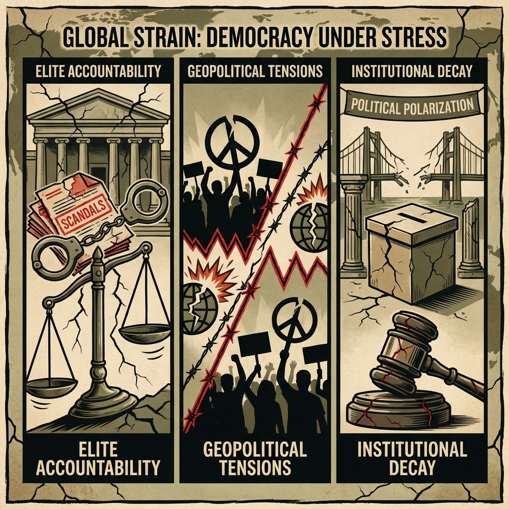

The Daily Globe: Epstein Scandal International Fallout, Epstein Files Political Weaponization, and Investigações Judiciais contra Bolsonarismo
Published on 2026-02-19

World
- Epstein Scandal International Fallout
Newly released Epstein files spark global outrage, implicating figures from US, Europe, South Africa. Debates focus on government cover-ups, elite accountability, and US justice system decay under Trump administration's perceived indifference.
- Gaza-Israel Conflict War Crimes Allegations
Ongoing discussions about Israel's use of advanced weaponry in Gaza, accusations of genocide, and humanitarian crises fueling protests and diplomatic tensions worldwide.
- Ukraine-Russia War NATO Escalation
Rumors of NATO intervention, debates over Western double standards, rejected peace deals like Minsk agreements, and the conflict's root causes with Russian narratives gaining traction.
- Iran Islamic Regime Oppression
Calls intensify in European parliaments for international intervention against Iran's human rights abuses, including executions and civilian crackdowns.
- European Immigration Controversies
In Ireland, UK, and Germany, controversies over fast-tracking citizenship for immigrants in militaries and infrastructure favoring diasporas ignite fears of cultural erasure.
USA
- Epstein Files Political Weaponization
Renewed scrutiny over Epstein's client list and connections to Trump and Bill Clinton, with accusations of cover-ups. Child abuse allegations being politicized rather than addressed, fueling institutional distrust.
- Government Shutdown Threats
Congress deadlocked on spending bills with fears of shutdown. Debates center on immigration enforcement funding, border security, and the SAVE Act voter ID push.
- Immigration ICE Controversies
High-profile ICE raids and deportations under Trump administration spark outrage with reports of deaths in custody and family separations, intersecting with housing crises.
- Transgender Rights Cultural Wars
Issues like transgender participation in sports and beauty pageants (Miss North Florida controversy) fuel identity politics debates alongside Super Bowl halftime backlash.
- Infrastructure Decay and Political Paralysis
Two-party paralysis blamed for crumbling roads, bridges, power grids, and schools. Governance turned into permanent opposition, nothing getting built.
Brazil
- Investigações Judiciais contra Bolsonarismo
Minister Alexandre de Moraes (STF) at center of controversies with summons in anti-democratic acts cases. Debates over Bolsonaro habeas corpus relatorship under André Mendonça, accused of political interference.
- Racha na Direita Críticas a Nikolas Ferreira
Nikolas Ferreira faces criticism from radical bolsonarista wing over supposed concessions or moderate positions, generating internal split in the right.
- Lula e o Carnaval Político
President Lula celebrated Carnival in Rio despite criticism over public spending and samba school themes seen as 'politicized', giving ammunition to opposition.
- Intimação de Ramagem por Atos Antidemocráticos
Alexandre de Moraes orders summons of Ramagem in action for anti-democratic acts, escalating judicial tensions with bolsonarismo.
- Reformas Políticas e Falta de Projeto de Nação
Discussions on political reform seen as superficial, with criticism of lack of a 'nation project' to address persistent economic and social crises.
Topic Index
- epstein-scandal
- elite-accountability
- gaza-conflict
- ukraine-war
- nato-escalation
- iran-oppression
- immigration-debates
- government-shutdown